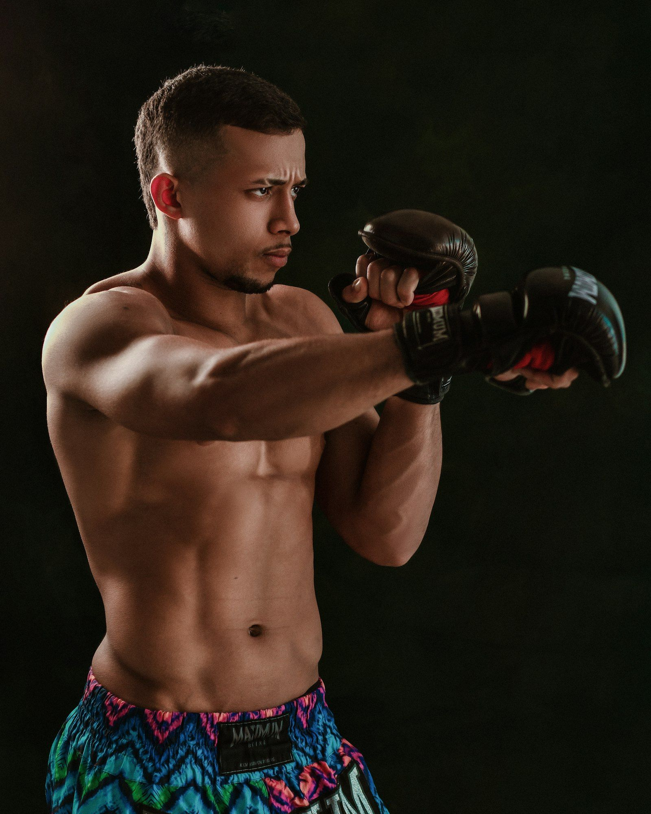

Accueil · Actualités · MMA : c’est quoi ?
MMA : c’est quoi ? Comprendre les arts martiaux mixtes

Le MMA — abréviation de mixed martial arts, ou arts martiaux mixtes en français — désigne un sport de combat où deux athlètes s’affrontent en combinant plusieurs disciplines : striking (boxe, kickboxing, muay thaï…), lutte, judo, jiu-jitsu brésilien et contrôle au sol. Contrairement à une idée reçue, ce n’est pas un « combat sans règles » : les compétitions professionnelles obéissent à un cadre précis (catégories de poids, arbitres, temps de round, techniques interdites).
Ce guide pose les bases pour lire une carte, comprendre un résultat ou suivre un gala comme UFC Paris 2026. UFC.FR est un média indépendant : nous expliquons le sport sans prétendre parler au nom d’une promotion.
Pourquoi parle-t-on d’arts martiaux « mixtes » ?
Historiquement, les combats opposaient des spécialistes d’un seul art — boxeur contre lutteur, par exemple. Le MMA moderne exige une polyvalence : un combattant doit savoir frapper debout, défendre une projection, se relever au sol et, le cas échéant, menacer une soumission. Cette synthèse explique la diversité des parcours : certains viennent de la boxe anglaise, d’autres du judo, du sambo ou du grappling pur.
En France, la pratique professionnelle encadrée s’est développée après la légalisation du MMA en 2020 (décret et homologation fédérale). Avant cela, le public connaissait surtout l’UFC à travers la télévision ou internet ; aujourd’hui, clubs, galas nationaux et cartes internationales coexistent sur le territoire.
L’octogone : l’enceinte de combat
La plupart des grandes promotions — dont l’Ultimate Fighting Championship — utilisent une cage octogonale (huit côtés). Elle sert à limiter les chutes hors de l’aire de combat et à sécuriser les échanges au corps à corps. D’autres organisations emploient parfois un ring carré ; le principe reste le même : un espace clos, surveillé par un arbitre central et des juges assis autour.
Un combat se déroule en rounds de durée fixe (souvent 5 minutes en MMA professionnel). Entre les rounds, une minute de repos. Les combats de titre masculins durent généralement cinq rounds ; la plupart des autres affrontements en comportent trois. Les règles exactes peuvent varier légèrement selon l’État ou la fédération, mais l’ossature reste comparable.
Les catégories de poids
Les combats se font à poids égal (ou quasi égal) pour limiter l’avantage de taille. Chaque promotion publie ses limites ; l’UFC en est la référence la plus suivie en France.
Hommes (UFC — repères usuels)
- Poids pailles — jusqu’à environ 52 kg (115 lb)
- Poids mouches — ~57 kg (125 lb)
- Poids coqs — ~61 kg (135 lb)
- Poids plumes — ~66 kg (145 lb)
- Poids légers — ~70 kg (155 lb)
- Poids welter — ~77 kg (170 lb)
- Poids moyens — ~84 kg (185 lb)
- Poids mi-lourds — ~93 kg (205 lb)
- Poids lourds — jusqu’à ~120 kg (265 lb)
Femmes
Les divisions féminines couvrent classiquement paille, mouche, coq et, selon les promotions, plume ou au-delà. L’UFC programme régulièrement des combats féminins sur ses cartes européennes, y compris à Paris. Pour les titres actuels par organisation, voir notre page champions actuels.
Comment se termine un combat ?
Trois grandes familles de résultats structurent le MMA :
- KO / TKO (knockout / technical knockout) : un combattant ne peut plus défendre intelligemment debout, ou l’arbitre stoppe l’action pour protéger un blessé. Le KO peut survenir sur un coup ; le TKO aussi au sol si les frappes deviennent trop dangereuses.
- Soumission : clé de bras, étranglement ou immobilisation provoquant un abandon (tap) ou une perte de connaissance. L’arbitre intervient dès que le combattant « tape » ou cesse de répondre.
- Décision : si le temps réglementaire expire sans finition, trois juges attribuent des scores round par round (système du « 10 must system »). On parle de décision unanime (tous d’accord), partagée (un juge diverge) ou majoritaire.
Existence aussi du match nul (rare), du no contest (incident réglementaire) ou de l’abandon médical entre les rounds. Comprendre ces termes suffit pour lire une fiche résultats sans se perdre.
MMA, UFC et autres ligues
L’UFC est la plus visible des promotions, mais ce n’est pas le MMA en tant que tel. En France, ARES FC, Hexagone MMA et d’autres organisations programment des galas nationaux ; à l’international, ONE, PFL ou KSW complètent le paysage. Notre panorama organisations MMA détaille leurs rôles respectifs.
Pour aller plus loin côté hexagone : le dossier MMA en France, les clubs et le calendrier événements.
Les règles bougent selon les commissions. Ce qui suit, c’est le cadre le plus courant.